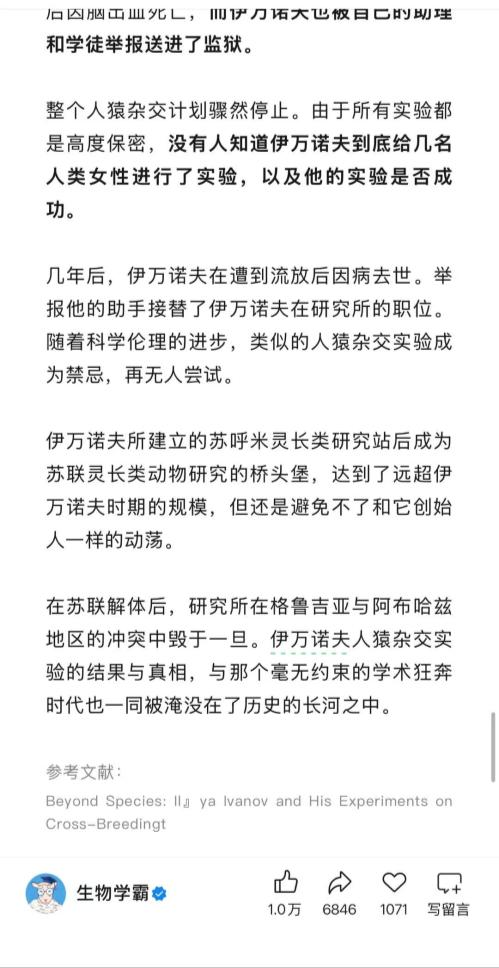
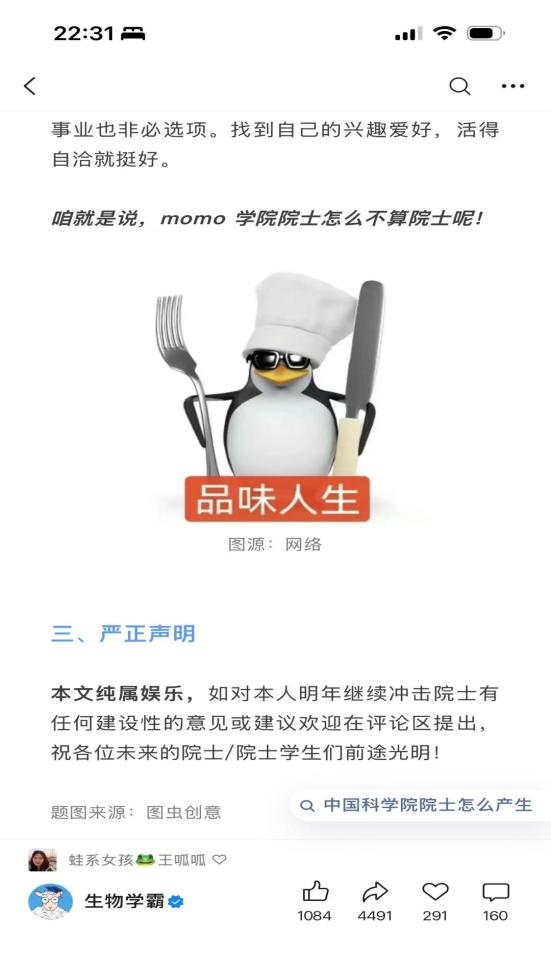
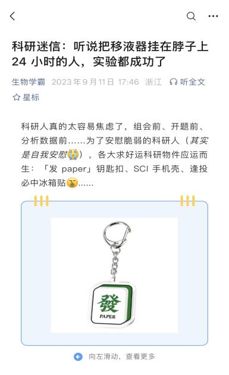
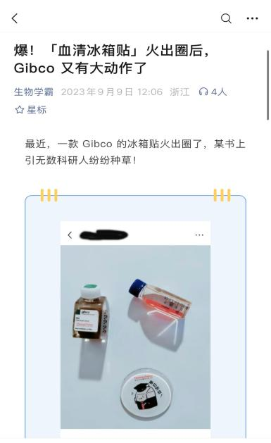
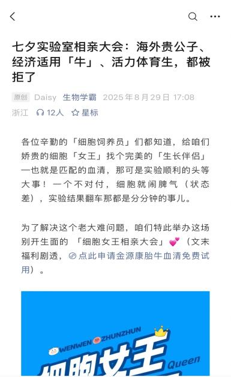
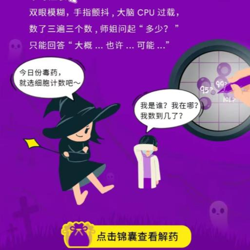
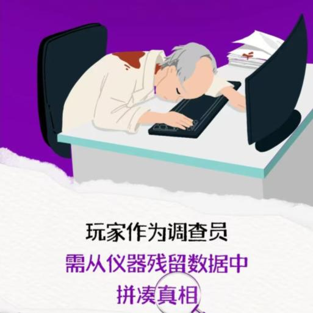
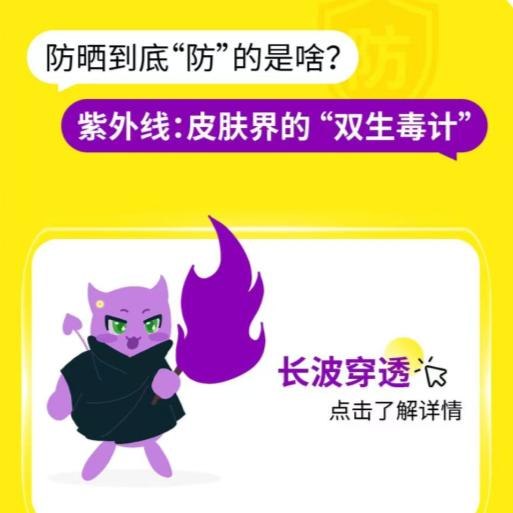
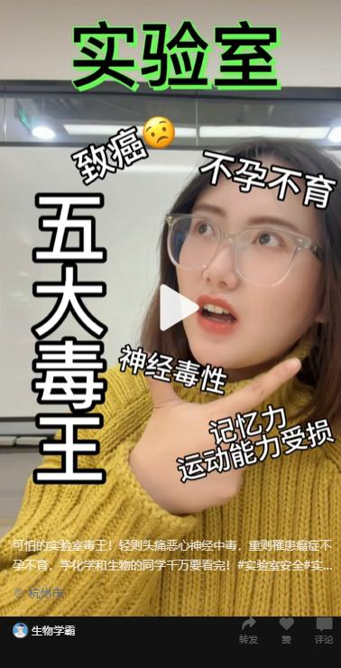
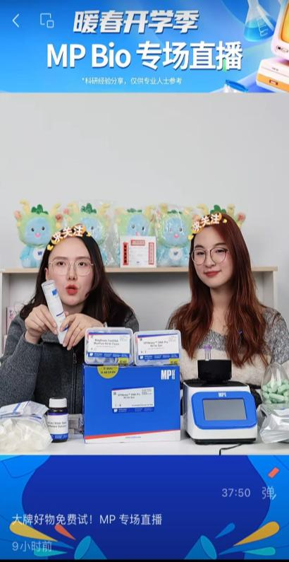

单篇最高阅读
TOP 1
生物学霸
科研头部公众号
CONTENT
& GROWTH
& GROWTH
01 / OFFICIAL ACCOUNT
官号
经营数据
负责「生物学霸」科研头部公众号，内容覆盖科普、品牌合作与直播。累计产出 2,513 篇原创内容，服务总用户数 1,030,397。数据来自公众号后台及直播平台，统计区间为 2025 至 2026 年。
原创内容
总用户数
日增粉峰值
直播观看
直播转化订单
02 / SELECTED WORK
内容案例
作品集精选
01 科学史话题
账号运营内容 / 破圈爆款 / 科学史话题
实验伦理的争议性，
打开科学史话题的传播入口
「逼迫 5 名女子与猩猩杂交，企图创造出新物种，这个科学家的实验有多疯狂」
以人与动物杂交实验为切口，用平实、由浅入深的叙事降低理解门槛，让科学史内容获得高传播和强互动。
- 414 万
- 阅读次数
- 2.38 分钟
- 平均阅读时长
- 3,060
- 阅后关注
- 10,285
- 听全文
- 0.26%
- 点赞率
- 0.03%
- 在看率
- 0.02%
- 留言率

SCIENCEHISTORY
争议、好奇与故事
02 行业经典话题
账号运营内容 / 破圈爆款 / 热点借势
借势院士增选热点，
用自嘲叙事激活评论区
「关于本人遗憾落选 2025 年增选院士的公告」
选题贴合社会热度，以论文式论据和自嘲口吻拆解“没有选上院士”的原因。行业身份感和网络表达形成反差，读者在评论区接梗、转发导师。
- 32 万
- 阅读次数
- 0.97 分钟
- 平均阅读时长
- 562
- 阅后关注
- 252
- 听全文
- 0.33%
- 点赞率
- 0.09%
- 在看率
- 0.08%
- 留言率

INDUSTRYCLASSIC
热点、自嘲与共鸣
推广内容 / 03 / COMMERCIAL CONTENT
商业内容，
巧妙融合
目标是阅读与 Leads。产品不抢占叙事，而是借熟悉的生活语言进入科研用户的注意力。

01 / 科研 × 玄学移液器也能有玄学
抓住“人人都信一点玄学”的共鸣，用插画解释概念，让幽默成为记忆点。

02 / 科研周边 × PR一块冰箱贴的开场
用客户的血清冰箱贴吸引注意，把原本乏味的 PR 稿变成可互动的内容。

03 / 血清拟人化给细胞找理想伴侣
把血清类比为择偶，以姓名卡片传达卖点，让专业信息更容易理解。
推广内容 / 04 / 组合拳：痛点 + 卖点
组合拳打法：
痛点 + 卖点
卖点要明确，记忆点要清晰，痛点必须切准。内容先让用户确认“这就是我在实验室遇到的问题”，再给出产品答案。
01扫码了解产品
Simple Western 系统
WB 实验从一天半缩短到 3 小时
02扫码了解产品
无缝克隆预混液
15 分钟温育，直接完成多片段组装，无需酶切
推广内容 / 05 / CLIENT OPERATIONS
给枯燥的核，
披上好看的衣服
客户渠道代运营中，内容外壳决定用户愿不愿意点开，产品卖点则藏在故事推进里。

童话故事女巫的毒药
借“女巫毒药”热点开场，每天随机毒死一类实验，最后给出商业产品作为解药。

悬疑案件实验室惊现疑案
用密室逃脱外壳包装实验故事，用户在一步步破案时与仪器产生交互。

趣味测评618 选防晒
从防晒霜成分切入，以性能检测的角度融合产品，嫁接测评博主的 IP 感。


全面推广 / 06 / VIDEO + LIVE
一场直播，让内容走到成交
4,000+观看人数362最高在线23 min平均观看150+转化订单
短视频承担兴趣触达，试用专场直播完成产品讲解与转化，形成一条完整的内容路径。
- 短视频：「可怕的实验室毒王」
- 试用专场直播：「暖春开学季 MP Bio 专场直播」
03 / METHODOLOGY
内容操盘的
5 步闭环
- 01
洞察
从用户画像、热搜与行业动态中找到题目。
- 02
选题
用冲突性、情绪价值与实用价值判断传播可能。
- 03
创作
故事化叙事，平实语言，让外行也能读懂。
- 04
传播
标题、头图与分发节奏共同完成触达。
- 05
转化
把客户产品翻译成用户可以感知的收益。
04 / CONTACT